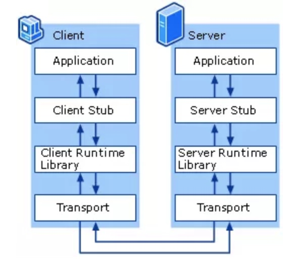

Go 语言中常用的 API 风格是 RPC 和 REST，常用的媒体类型是 JSON、XML 和 Protobuf。在 Go API 开发中常用的组合是 gRPC + Protobuf 和 REST + JSON。
REST 代表表现层状态转移（REpresentational State Transfer）
RPC （Remote Procedure Call，RPC）该协议允许运行于一台计算机的程序调用另一台计算机的子程序，而程序员无须额外地为这个交互作用编程。

RPC 相比 REST 的优点主要有 3 点：
RPC+Protobuf 采用的是 TCP 做传输协议，REST 直接使用 HTTP 做应用层协议，这种区别导致 REST 在调用性能上会比 RPC+Protobuf 低
RPC 不像 REST 那样，每一个操作都要抽象成对资源的增删改查，在实际开发中，有很多操作很难抽象成资源，比如登录操作。所以在实际开发中并不能严格按照 REST 规范来写 API，RPC 就不存在这个问题
RPC 屏蔽网络细节、易用，和本地调用类似...
REST 相较 RPC 也有很多优势：
轻量级，简单易用，维护性和扩展性都比较好
REST 相对更规范，更标准，更通用，无论哪种语言都支持 HTTP 协议，可以对接外部很多系统，只要满足 HTTP 调用即可，更适合对外，RPC 会有语言限制，不同语言的 RPC 调用起来很麻烦
JSON 格式可读性更强，开发调试都很方便
在开发过程中，如果严格按照 REST 规范来写 API，API 看起来更清晰，更容易被大家理解...
内部系统之间调用用 RPC，对外用 REST